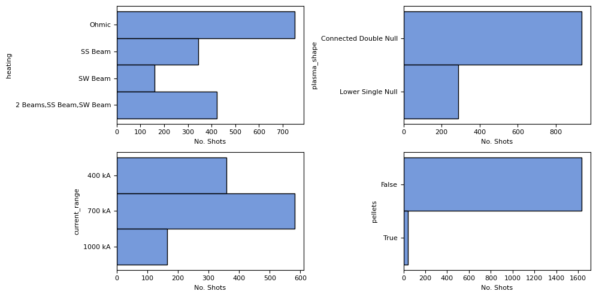

import pandas as pd
import seaborn as sns
import intake
import matplotlib.pyplot as plt
plt.rcParams["font.family"] = "sans"
plt.rcParams["font.size"] = 8
sns.set_palette('muted')
HOST_URL = 'https://mastapp.site'
catalog = intake.open_catalog(f'{HOST_URL}/intake/catalog.yml')
Visualizing Shot Metadata#
This notebook contains a demonstration of plotting several of the summary statistics accompany the shot metadata.
Firstly, we’re going to load all the shot data into a pandas dataframe:
df = pd.DataFrame(catalog.index.level1.shots().read())
summary = df.loc[df.campaign == 'M9']
summary
---------------------------------------------------------------------------
KeyboardInterrupt Traceback (most recent call last)
Cell In[3], line 1
----> 1 df = pd.DataFrame(catalog.index.level1.shots().read())
2 summary = df.loc[df.campaign == 'M9']
3 summary
File ~/miniconda3/envs/mast-book/lib/python3.11/site-packages/intake/source/jsonfiles.py:168, in JSONLinesFileSource.read(self)
166 def read(self):
167 with self._open() as f:
--> 168 return list(map(json.loads, f))
File ~/miniconda3/envs/mast-book/lib/python3.11/site-packages/fsspec/asyn.py:118, in sync_wrapper.<locals>.wrapper(*args, **kwargs)
115 @functools.wraps(func)
116 def wrapper(*args, **kwargs):
117 self = obj or args[0]
--> 118 return sync(self.loop, func, *args, **kwargs)
File ~/miniconda3/envs/mast-book/lib/python3.11/site-packages/fsspec/asyn.py:91, in sync(loop, func, timeout, *args, **kwargs)
88 asyncio.run_coroutine_threadsafe(_runner(event, coro, result, timeout), loop)
89 while True:
90 # this loops allows thread to get interrupted
---> 91 if event.wait(1):
92 break
93 if timeout is not None:
File ~/miniconda3/envs/mast-book/lib/python3.11/threading.py:629, in Event.wait(self, timeout)
627 signaled = self._flag
628 if not signaled:
--> 629 signaled = self._cond.wait(timeout)
630 return signaled
File ~/miniconda3/envs/mast-book/lib/python3.11/threading.py:331, in Condition.wait(self, timeout)
329 else:
330 if timeout > 0:
--> 331 gotit = waiter.acquire(True, timeout)
332 else:
333 gotit = waiter.acquire(False)
KeyboardInterrupt:
Summary Statistics About Shots#
Let’s look at a summary of simple counts of different shot metadata.
fig, axes = plt.subplots(2, 2, figsize=(10, 5))
ax1, ax2, ax3, ax4 = axes.flatten()
sns.histplot(summary, y='heating', ax=ax1)
sns.histplot(summary, y='plasma_shape', ax=ax2)
sns.histplot(y=summary.current_range, ax=ax3)
sns.histplot(y=summary.pellets.astype(str), ax=ax4)
for ax in axes.flatten():
ax.set_xlabel('No. Shots')
plt.tight_layout()

Plasma Beta (\(\Beta\)) v.s Confinement Time (\(\tau_E\))#
This plot can show how the efficiency of energy confinement varies with plasma pressure.
plt.figure()
sns.scatterplot(summary, y='cpf_tautot_max', x='cpf_betmhd_max', hue='heating')
plt.xlim(0, 18)
plt.ylim(0, 1)
# plt.yscale('log')
plt.ylabel('Confinement time $\\tau_E$ (s)')
plt.xlabel('Plasma Beta $\\beta$ (%)')
Text(0.5, 0, 'Plasma Beta $\\beta$ (%)')
Plasma Temperature (\(T_e\)) vs. Plasma Density (\(n_e\))#
This can reveal the relationship between temperature and density, which is critical for achieving the conditions necessary for fusion.
plt.figure()
sns.scatterplot(summary, y='cpf_te0_ipmax', x='cpf_ne0_ipmax', hue='current_range', alpha=0.8)
plt.xlim(0, .8e20)
plt.ylabel('Temperature $T_e$ (eV)')
plt.xlabel('Density $n_e$ ($m^{-3}$)')
Text(0.5, 0, 'Density $n_e$ ($m^{-3}$)')
Plasma Current (\(I_p\)) vs. Confinement Time (\(\tau_E\))#
This can indicate how the plasma current affects the confinement time, providing insights into stability and performance.
plt.figure()
sns.scatterplot(summary, y='cpf_ip_av', x='cpf_tautot_max', hue='current_range', alpha=0.8)
plt.xlim(0, 1)
plt.xlabel('Confinement Time $\\tau_E$ (s)')
plt.ylabel('Average Plasma Current $I_p$ (kA)')
Text(0, 0.5, 'Average Plasma Current $I_p$ (kA)')